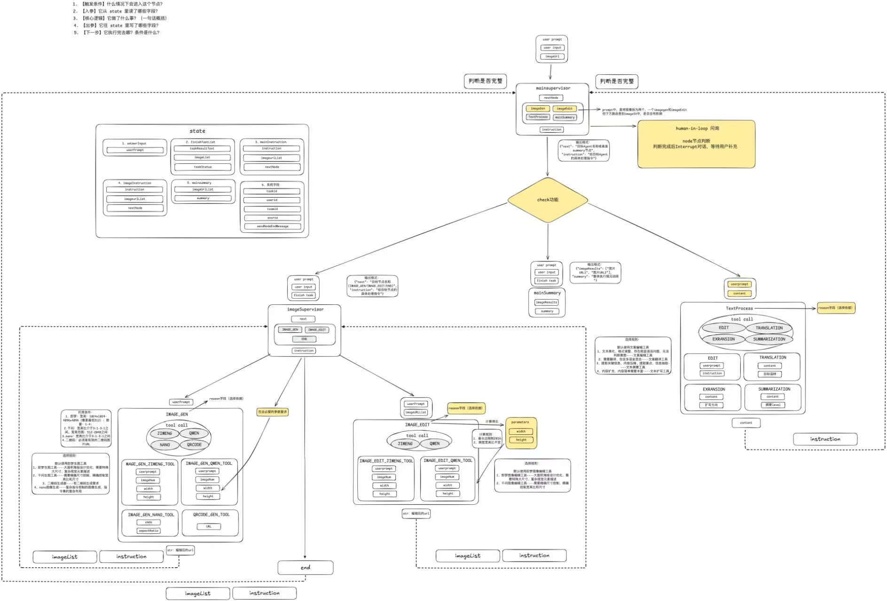

图像生成链路
梳理文生图、单图生图、二维码生成、Nano Banana 生成等能力的参数要求与路由边界。
Business Case
面向 AI 设计场景，参与堆友多 Agent 架构建设与图像生成编辑 Agent 方案设计，把图像生成、图像编辑、文本处理、任务规划、状态记忆和结果总结拆成可独立迭代的 Agent / Tool 组。

项目目标是提升 Agent 对复杂设计任务的理解、拆解、执行和复盘能力，支持多轮交互、上下文记忆、用户问询、模型路由、图像生成与编辑等能力。我的工作重点是把混在单一 Agent 里的能力拆成上层调度、图像任务、文本任务和底层 Tool，并明确每个节点的输入输出、路由条件和异常处理方式。
梳理文生图、单图生图、二维码生成、Nano Banana 生成等能力的参数要求与路由边界。
梳理 userPrompt、imageUrl、width、height 等参数，并用 reason 字段记录模型选择原因。
接入即梦、Qwen Image、Nano Banana、二维码生成、即梦编辑、Qwen Image Edit 等能力。
通过任务状态、节点结果、用户问询和模型选择原因，让 Agent 从黑盒调用变成可观察流程。